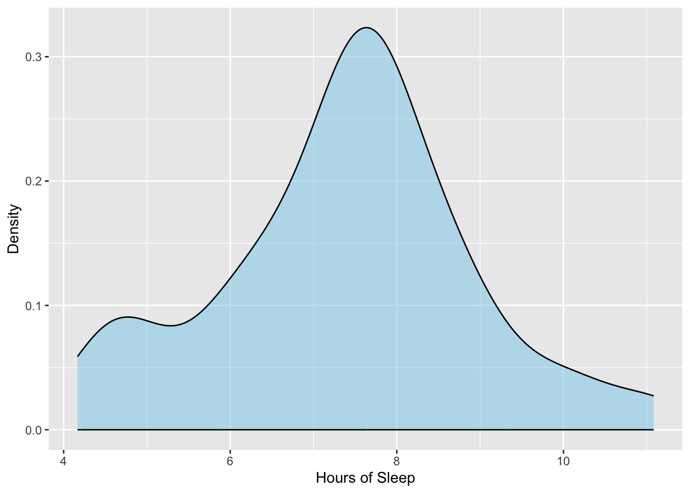
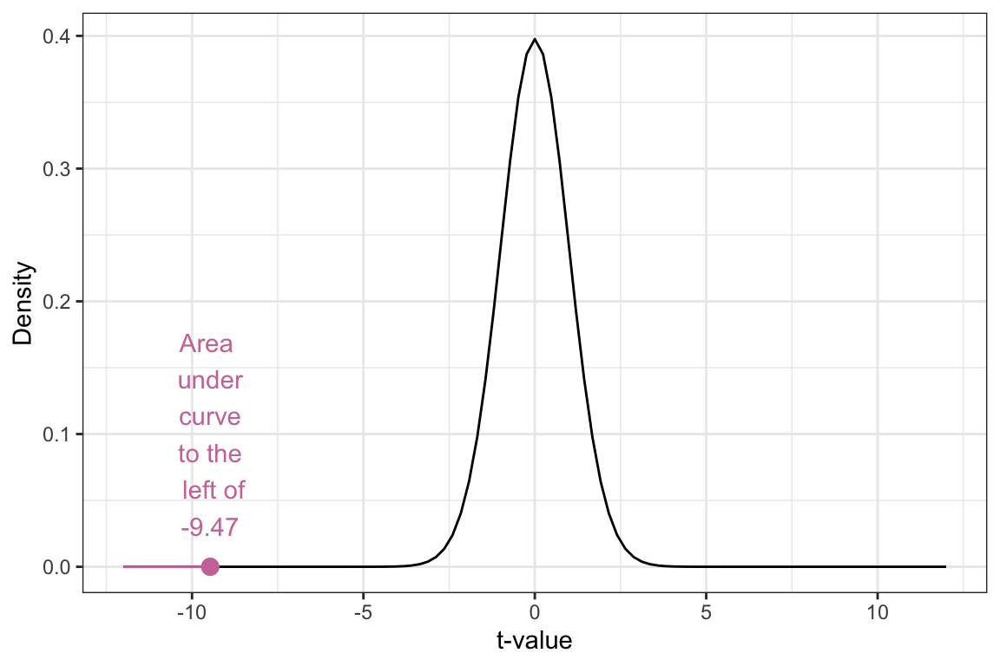
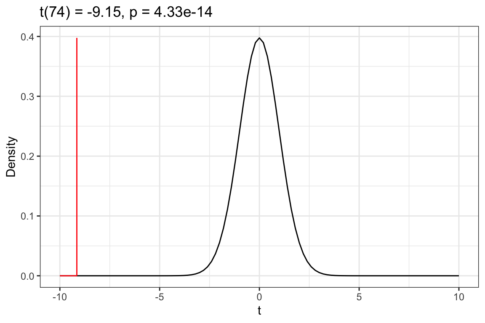
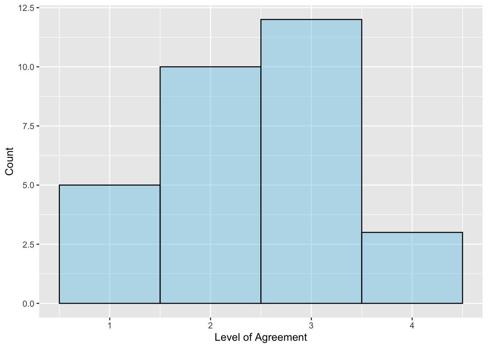
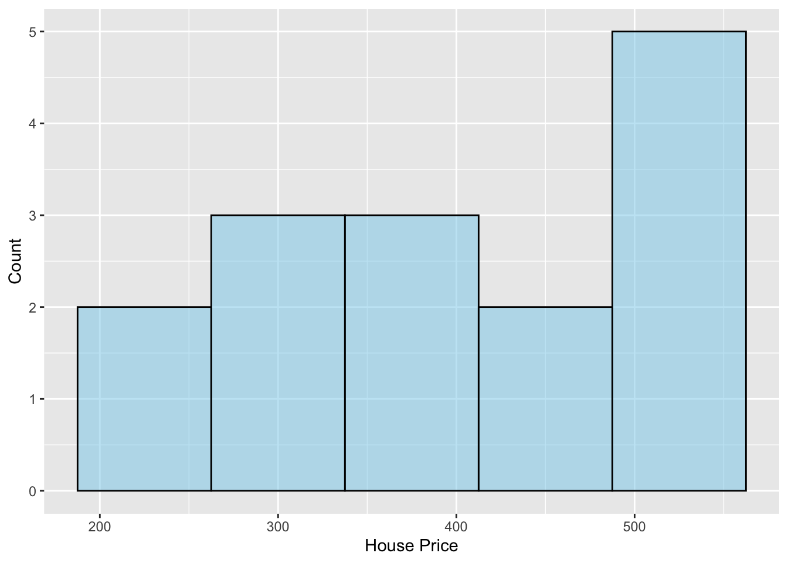
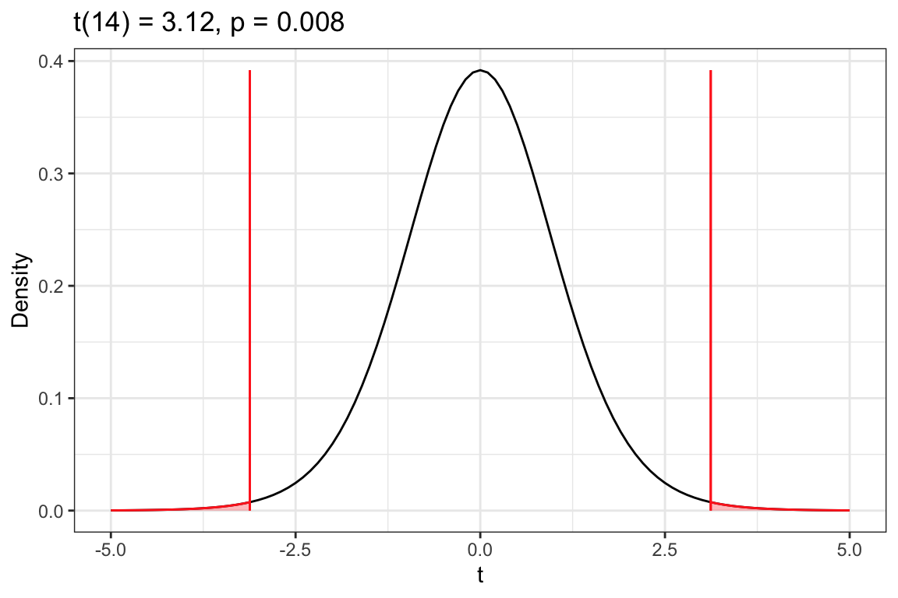

In this chapter you will learn how to carry out a one-sample t-test using R to statistically compare a sample of data to a standard by accounting for the sampling uncertainty.
In this case study, researchers collected data on the bedtime, wake-up time, and hours slept for a sample of American teens in Grades 9–12. These data were used to evaluate the following statistical hypotheses For example, here are a set of potential hypotheses about teen sleep:
The analysis started by importing the data and visualizing and numerically describing the amount of sleep for the teens in our sample.
# Create density plotgf_density(~ hrs_sleep, data = teen_sleep,color ="black", fill ="skyblue",xlab ="Hours of Sleep",ylab ="Density" )# Compute numerical summariesdf_stats(~hrs_sleep, data = teen_sleep)
response min Q1 median Q3 max mean sd n
1 hrs_sleep 4.166667 6.541667 7.583333 8.291667 11.08333 7.391111 1.522724 75
missing
1 0
Figure 10.1: Density plot of the hours of sleep for 75 teenagers.

These analyses suggest that, on average, the 75 teens in the sample are not getting the recommended 9 hours of sleep a night. They seem to be getting much less sleep on average, with a typical teen in the sample getting around 7.5 hours of sleep a night (SD = 1.5). To evaluate whether this lower amount of sleep we are seeing in the sample data is only a function of sampling uncertainty, we will carry out a one-sample t-test. To do this, we need to convert our sample mean to a t-value and then evaluate it in a t-distribution with df.
We have the observed mean (), and the hypothesized mean () from the data and null hypothesis, respectively. To obtain the SE we bootstrapped from the data.
# Draw a bootstrap sample of 75 observations and compute the mean# Do this 1000 times # Assign these into an object called bootstrap_meansset.seed(42)bootstrap_means <-do(1000) * {mean(sample(teen_sleep$hrs_sleep, size =75, replace =TRUE))}# Compute numerical summaries to get SEdf_stats(~result, data = bootstrap_means)
response min Q1 median Q3 max mean sd n
1 result 6.837778 7.278889 7.391667 7.509167 8.023333 7.395381 0.1699168 1000
missing
1 0
Based on the bootstrapping, the SE is 0.170. Putting this together, we compute the t-value as:
We can then sketch the t-distribution with 74 df, include the t-value we just computed, and shade the area under the density plot that corresponds to the alternative hypothesis.
Figure 10.2: Density plot of the t-distribution of the sample means based on the thought experiment underlying a hypothesis test assuming that the mean amount of sleep for all tennagers is 9 hours (t-value of 0). The blue shaded area represents the t-values we expect if the null hypothesis is true. The pink dot represents the observed t-value of -9.47.

The p-value (proportion of the pink shaded area to the whole area under the curve) is quite small. Because it is so small, it is difficult to even estimate its size—. This small p-value leads us to reject the null hypothesis, indicating that the data suggest that the average amount of sleep teens are getting is likely less than 9 hours and that this result is not only because of sampling uncertainty. That is, the empirical evidence is pointing us to the conclusion that teens are not getting the recommended amount of sleep.
10.2 Using the t_test() Function
Rather than bootstrapping the SE, we will use the t_test() function to compute the SE directly. This function is part of the {mosaic} library, and takes the following arguments:
A formula using the tilde (~), similar to the gf_ and df_stats functions, that specifies the attribute to carry out the one-sample t-test on.
data= specifying the name of the data object,
mu= indicating the value of the mean in the null hypothesis,
alternative= indicating one of three potential alternative hypotheses: "less", "greater", or "two.sided" (not equal). Note that these need to be enclosed in quotation marks.
To carry out the one-sample t-test in the earlier case study, we will use the following syntax. We assign the results of this t-test to an object (in this case, I called it my_t).
# One-sample t-testmy_t <-t_test(~hrs_sleep, data = teen_sleep, mu =9, alternative ="less")
To see the results of the test, you can just call my_t, or whatever you named the object storing the t-test results. The output, however, is a bit unorganized. Instead, we are going to use two functions from the {educate} package to view the results of the t-test: t_results() and plot_t_dist(). To use these functions, we will need to load the {educate} library. Then, we can use each of these functions by supplying it with the name of the object storing our t-test results. We begin by using the t_results() function.
--------------------------------------------------
One Sample t-test
--------------------------------------------------
H[0]: mu = 9
H[A]: mu < 9
t(74) = -9.150303
p = 4.328872e-14
--------------------------------------------------
This function outputs the null and alternative hypotheses being tested in the one-sample t-test. It also provide the observed t-value () and the df (74) for the t-distribution. Finally, it outputs the p-value for the test. When p-values are really small, R will output the p-value in scientific notation. The e-14 part of the p-value means , which means, move the decimal point 14 places to the left. Thus the p-value is:
Note that the t-value we get from this function was different than the t-value we got earlier. This is because the SE computed by the t_test() function is different than the SE we get when we bootstrap. Because of this, it is very important to indicate the method you used to get the t-value; was it based on bootstrapping a SE? Or did you use the t_test() function, which uses a normal-based method for computing the SE?
We can also use the plot_t_dist() to visualize the t-distribution with 74 df, where our observed t-value of , falls in this distribution, and the shaded area under the curve associated with the p-value based on the specified alternative hypothesis. The results form the t-test will also be printed above the plot.
# View t-distributionplot_t_dist(my_t)
Figure 10.3: Density plot of the t-distribution of the sample means based on the thought experiment underlying a hypothesis test assuming that the mean amount of sleep for all tennagers is 9 hours (t value of 0). The red vertical line represents the observed t-value of -9.15. The shaded area under the curve to the left of -9.15 shows the associated p-value of that corresponds to the alternative hypothesis that .

The t_test() function uses a different method for computing the standard error than bootstrapping. It computes the standard error using a mathematical formula, namely,
where, SD is the sample standard deviation, and n is the sample size. This method of computing the standard error approximates the true standard error by employing information about the sample. In some cases this approximation is accurate and in other cases it is not. We will study this more in Chapter 11.
10.3 Case Study 2: Continuous Assessment
To study the practice of continuous assessment in Ethiopian primary schools, Abejehu (2016) collected survey responses from several primary school teachers. One tenet of continuous assessment is that to evaluate learning, teachers need to understand students’ prior knowledge. One item on the survey asked teachers about this: “I always assess students’ prior knowledge before starting new lesson.” Teachers responded on a Likert scale, with options: Strongly Agree (4), Agree (3), Disagree (2), and Strongly Disagree (1). The responses for 30 teachers is given in the prior_knowledge attribute of the continuous-assessment.csv file (see codebook for additional detail).
To evaluate whether Ethiopian primary teachers are measuring students’ prior knowledge, we will analyze the data in the prior_knowledge attribute. Because there is not substantive work on whether teachers actually do or do not assess students’ prior knowledge, we don’t have a priori conjectures about whether they will generally agree (3 or 4) or disagree (1 or 2) with the statement in the survey item. Because of that, we will examine the following set of potential hypotheses:
Before we carry out a hypothesis test, we should always explore the data by creating visualizations and numerical summaries of the attribute. Because the data in the attribute is more discrete (can only be 1–4 with no values in between), we will create a histogram rather than a density plot of the responses. We will also set the bins= argument to 4 since there are only four possible response options.
# Create histogramgf_histogram(~prior_knowledge, data = continuous_assessment,bins =4,color ="black", fill ="skyblue",xlab ="Level of Agreement",ylab ="Count" )# Compute numerical summariesdf_stats(~prior_knowledge, data = continuous_assessment)
response min Q1 median Q3 max mean sd n missing
1 prior_knowledge 1 2 2.5 3 4 2.433333 0.8976342 30 0
Figure 10.4: Histogram of teachers responses to the survey item: I always assess students’ prior knowledge before starting new lesson.

The histogram suggests that the distribution of responses is somewhat symmetric, with roughly an equal number of teachers assessing (3 and 4) and not assessing (1 and 2) students’ prior knowledge. Most teachers did not indicate strong agreement nor strong disagreement. The average response is 2.43, which indicates that a typical teacher does not assess students’ prior knowledge. However, the relatively large SD (0.90) suggests that there is a great deal of individual variation in the responses. Next, we carry out a one-sample t-test.
# One-sample t-testmy_t <-t_test(~prior_knowledge, data = continuous_assessment, mu =2.5, alternative ="two.sided")# View t-test resultst_results(my_t)
--------------------------------------------------
One Sample t-test
--------------------------------------------------
H[0]: mu = 2.5
H[A]: mu ≠ 2.5
t(29) = -0.4067897
p = 0.6871492
--------------------------------------------------
# View t-distributionplot_t_dist(my_t)
Figure 10.5: Density plot of the t-distribution of the sample means based on the thought experiment underlying a hypothesis test assuming that the mean response for all Ethiopian primary school teachers is 2.5 (t value of 0). The red vertical line represents the observed t-value of -0.41. The shaded area under the curve to the left of -0.41 and to the right of +0.41 shows the associated p-value of .687 that corresponds to the alternative hypothesis that .
Based on the p-value of .687, we would fail to reject the null hypothesis. We do not have evidence that the average response for all Ethiopian primary school teachers differs from 2.5; that is the empirical data is consistent with the hypothesis that the average response for all Ethiopian primary school teachers is 2.5.
SUPER IMPORTANT NOTE
Just because data are consistent with a hypothesis does not mean that hypothesis is true. As an example, consider a patient who goes to the doctor with a set of symptoms (e.g., aches, fever, congestion). The symptoms are the data the doctor will use to help make a diagnosis (hypothesis) which is consistent with the symptoms. However, there are likely several diagnoses that are consistent with the same set of symptoms. This is also true of hypotheses: The data can be consistent with several different hypotheses.
In our example, the data were consistent with the null hypothesis that the average response for all Ethiopian primary school teachers is 2.5. It turns out, that the data is also consistent with the hypothesis that the average response for all Ethiopian primary school teachers is 2.6. And 2.7, and 2.5. In fact, there are several different hypotheses that the data are consistent with. This is why we cannot say that the average response for all Ethiopian primary school teachers IS 2.5, but can only say that it IS CONSISTENT with the hypothesis that the average is 2.5.
10.4 Case Study: House Prices
The average price of a single-family house in Minneapolis is $322.46k (as of May 2023). Is the average price of a house near the University of Minnesota different than that? The data in zillow.csv include the listing price (in thousands of dollars) for 15 houses in neighborhoods adjacent to the UMN campus (e.g., Como, Marcy-Holmes, Cedar-Riverside). We will use these data to evaluate the following hypotheses:
# Create histogramgf_histogram(~price, data = zillow,binwidth =75,color ="black", fill ="skyblue",xlab ="House Price",ylab ="Count" )# Compute numerical summariesdf_stats(~price, data = zillow)
response min Q1 median Q3 max mean sd n missing
1 price 249.9 327 399.9 499.995 549.9 404.966 102.4312 15 0
Figure 10.6: Histogram of the asking price for 15 houses in neighborhoods adjacent to the UMN campus.

The sample distribution is left-skewed indicating that more of the houses are at the higher end of the price range. A typical single-family house near the UMN campus costs a little over 400 thousand dollars (M = $404.97k). There is a lot of variation in house price, with some as low as $250k and others as high as $550k (SD = $102.43k). The sample evidence supports the hypothesis that the average price of a house near the UMN campus is different than the average house in Minneapolis. Next, we will carry out a one-sample t-test to determine whether this difference is more than we expect because of sampling variation.
# One-sample t-testmy_t <-t_test(~price, data = zillow, mu =322.46, alternative ="two.sided")# View t-test resultst_results(my_t)
--------------------------------------------------
One Sample t-test
--------------------------------------------------
H[0]: mu = 322.46
H[A]: mu ≠ 322.46
t(14) = 3.1196
p = 0.007533288
--------------------------------------------------
# View t-distributionplot_t_dist(my_t)
Figure 10.7: Density plot of the t-distribution of the sample means based on the thought experiment underlying a hypothesis test assuming that the mean cost for all houses near campus is $322.46k (t value of 0). The red vertical line represents the observed t-value of 3.12. The shaded area under the curve to the right of 3.12 shows the associated p-value of .004 that corresponds to the alternative hypothesis that .

$322.46k.">
The results of the t-test, , , indicate we should reject the null hypothesis. This suggests that the empirical evidence is consistent with the average cost of a house near the UMN campus being different than the average cost of a house in Minneapolis more broadly.
10.5 References
Abejehu, S. B. (2016). The Practice of ContinuousAssessment in PrimarySchools: TheCase of Chagni, Ethiopia. Journal of Education and Practice.